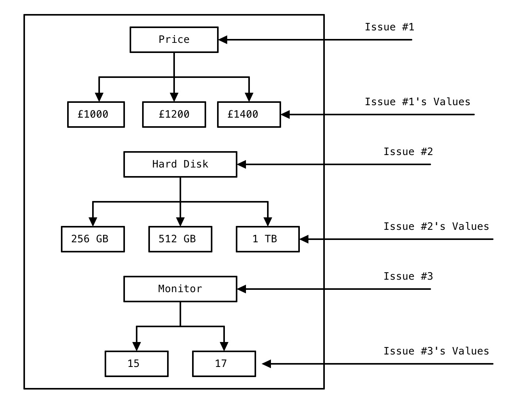
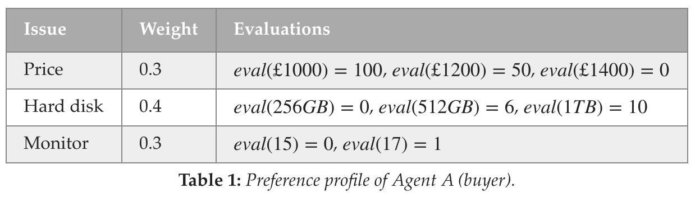
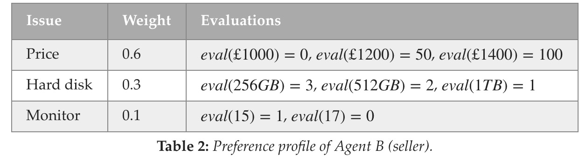
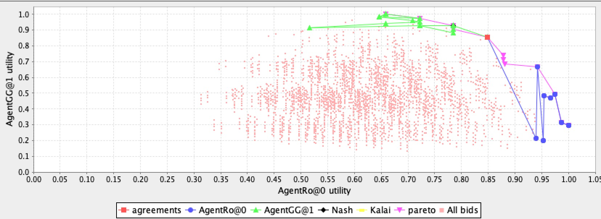

基础概念解析
这一章节，我会带大家过一下Lab1涉及到的基础知识点与概念。这些重要的概念对你以后如何编写自己的Agent极为重要。如果不能理解这些概念，会对你之后使用Genius的API造成很大的困扰。不过放心，我会用较为精简的话语带你们慢慢认识这些概念。当然，如果有说错的地方，也欢迎你们fork我的docs，帮我修改，然后push哈。
Domain, Issues 和 Values
Lab1中用了一个这样的场景来描述Domain(域), Issues(可以翻译为议题)和Values(值)之间的关系:
Agent A作为买家(buyer)要和卖家Agent B(seller)进行笔记本价格上的谈判(Negotiation)。
笔记本的属性包括价格(Price💰),硬盘大小(Hard Disk💿)以及显示器(Monitor🖥)的大小。(如下图所示) 
那么:
Domain可以被理解为一个问题的场景(比如笔记本谈判这个场景，或者你也可以当成是一个剧本杀的剧本📚)，这个场景下有很多Issues需要Agent之间进行议论(比如议论价格多少，硬盘多大，显示器多大)，每个Issue具体取多少值，那就是Value啦。
用这样的角度去理解Lab1里的那些公式，应该会简单一点😊。
Preference Profiles
A 和 B 在笔记本交易这个Domain下，对Price, Hard Disk以及Monitor进行博弈。可以想象你眼前A和B轮流说出自己的报价(Offer)，比如：
A说我报一个offer{Price:£1200, HardDisk:1 TB, Moniotor:17寸}，你就说你卖不卖吧。
B说我不卖，我报一个offer{Price:£1500, HardDisk: 256 GB, Monitor:15寸}，你就说你买不买吧。
A说我不卖，我报一个......
就这样, A和B完成了一个round的博弈。很显然，他们是没达成协议的。因为他们各自的偏好(Preference)并没有被满足，所以他们并没有接受当前的offer。
说到这，你们应该明白了，每个Agent其实都有自己的Preference,这就像他们存在的目的一样，努力去完成这个目的，或者努力代理(agent的英文翻译为代理的意思)别人完成别人的目的，就像一个木有感情的工具人🤖。作为buyer，我当然希望price越低越好，hard disk越大越好，monitor越大越好。但作为seller，我当然是想price卖的越贵越好，hard disk越小越好，monitor越小越好咯。
那么如何去衡量一个offer对Agent个体之间的好坏？这个可以用数值去衡量吗？这就要引出一个新的概念叫做utility(效用)。
Utility
Utility这个词，可能对大部分学生来说都比较陌生，少部分有过经济学或者金融学背景的童鞋应该能理解这个词的意思(下学期选修Computational Finance的同学需要多留意这些经济学概念噢🏦)。可以笼统的理解为你对这个东西有多喜爱，有多满意，就有多少效用。
怎么计算效用呢？当然有专门的函数来计算utility了。在学习这个function之前，实验中专门提到你们所要考虑的问题是Additive Utility Function下的问题。可以理解为所有的值都是离散的，比如，价格只有£10，£20，£30这些离散的情况。Genius下的条件都是离散的，而非连续的。
Additive Utility Function的公式是:
或许有些童鞋很久没有接触数学了，没关系，我带你们过一遍这个公式🐷。在我们理解这个公式前，先理解什么是\(eval\)。如下图所示, 作为买家A, 他为了描述自己对不同issue下的value的偏好，内心会自己去评估(evalutation)这些value。你看，他在Price方面，给£1000评估了100分(他当然希望价格越低越好啦)，给£1400估分为0。然后分别对Hard disk和Monitor下的不同value进行估分。  需要注意的一点是，不同issue下的evaluation是不能比较的。打个比方，Price(£1200)的50分和Hard disk(1TB)的10分是不能比较的。
在认识过evaluation的含义之后，我们来理解一下公式的意思。先assume(假设)一个offer为{Price:£1400, HardDisk: 256 GB, Monitor:15寸}(🐶很明显，这个是对seller B非常有利的offer，对buyer A非常不利。可以提前猜出，这个offer对B的效用肯定高于对A的效用，我们待会计算一下看看对不对)。
-
\(U_{j}(o)\) : offer o 对Agent \(j\) 的效用
-
\(\sum_{i=1}^{n}\) : 我们要对i个Issues的效用进行累加求和
-
\(w_{j}^{i}\) : Agent \(j\) 对不同Issues的偏好的权重(weight)。比方说，Agent A可能更喜欢在Price占点便宜，而不怎么在乎Monitor的大小。所以他会分给Price更多的权重。
-
\(\frac{\text { eval }_{j}\left(o_{i}\right)}{\max \left(\text {eval}_{j}\left(I_{i}\right)\right)}\) : 有点复杂。举个例子，就拿{Price:£1400, HardDisk: 256 GB, Monitor:15寸}例子来看，A在Price这个issue下的效用为 \(0.3*(0/100)=0\)。没错，这个offer在价格方面，给A的utility是0。因为A不想用最贵的价格买它。
那么offer {Price:£1400, HardDisk: 256 GB, Monitor:15寸} 对A的总效用是多少呢？看以下计算： \(U=0.3*(0/100)+0.4*(0/10)+0.3*(0/1)=0\)。可以说这个offer对A来说，是他最不想要的。
那么对B呢？B的Preference Profile如下图。那么\(U=0.6*(100/100)+0.3*(3/3)+0.1*(1/1)=1\),utility为1。这说明这个offer是B最想要的。同时你也应该明白，utility的范围是[0,1]。你可以通过实验中的table 3去计算其他offer对A和B不同的utility来加深理解噢。 
😎读到这，你是不是能稍微明白点agent的意思了？稍稍提前透露下，之后的Agent大作业实际上可以理解为两边互相出offer。一方面你需要计算自己的preference(因为你不知道自己的preference是多少，所以你需要算法算出来)，这样你报offer才能往自己偏好的方向出，另一方面你也不知道对手的preference，你也得通过对手每轮报价的offer去计算出对手的报价模型。最理想的情况就是你出的offer是自己喜欢的，对手不喜欢的。最差的情况就是你没猜中自己和对手的模型，报价一个自己最讨厌，但对手喜欢的。那么对手就会同意报价，此时你的utility会明显低于对手，那么你在一定程度上就输了🙀。
噢，对了。在Lab1 1.2 的最后抛出了一个definition: Pareto optimality。🤗我觉得知乎上的这个回答写的不错，你们可以去理解下： 如何通俗地解释「帕累托最优」（Pareto optimum）？。当然，上课的ppt中也会提到帕累托最优，这个知识点你们需要理解的哈。
Genius实操
Lab1 3.1内容中介绍了如何创建一个domain,并且创建两个preference profile，让他俩开始negotiate。你可以理解为你写了一个剧本，剧本中有两个人，两个人根据自己的不同偏好进行报价谈判。
这一部分内容因为你只需要跟着lab做一遍就好啦，我也就不细讲啦。
不过值得一说的是。后面的大作业，不会让你自己定义domain并且编写preference的。比赛都是提供好不同的domain，和不同的preference profile(当然，你是不知道preference profile的内容的，不然你为什么还要预测自己的模型呢)🧐。
总结
可能很多人刚开始没看懂Genius negotiation的结果图，那我带你们稍微理解下，你们很容易就懂啦。
我会用自己的Agent和19年ANAC获奖的agent:AgentGG来给你们介绍一下。如下图所示:

蓝色的offer是我出的，绿色的offer是AgentGG出的。横坐标代表当前offer点我的utility,纵坐标代表对手的utility。
实际上呢这张图是最后的结果图。在negotiation运行的时候，蓝点🥶会出一次，绿点🤢会出一次，然后交替直至最后一轮(默认为60轮)。
理想情况下，我刚开始出的offer的utility会随着轮数的降低而降低。这就跟砍价似的，我一点点的把价格降下去，直至最后的对方满意了为止。
红点的意思是，我(或者对手)出了一个offer，双方都同意，那么就deal啦。
然后就开始比谁的utility更高。😫这次negotiation其实我俩的utility差不多。我0.848, 他0.857。很显然，这一局谈判是我输啦。
那么肯定有人会问，那我一直出一个能让我获得高utility的offer行不行呢？当然是可以的啦。但是会面临两个问题。
- 如果对手到最后一轮也不同意你的offer，那么双方都没达成交易，双方的utility都是0。这可谓两败俱伤。
- 如果这次大作业的规则没变，那么最后的评分标准也会考虑最后的offer距离纳什均衡点的距离(图中是黑点，但是与绿点重叠了，不明显)。也可以理解为，你们两个人的utility应该悬殊不多，大家都尽可能多的获得了自己想要的utility。当然，学到后面，会提到welfare(社会福利)这个概念，意思就是当前domain下，大家总共的utility。所以想要拿高分，当然是让welfare越高越好啊。可不能出个offer把对手逼死了😂。